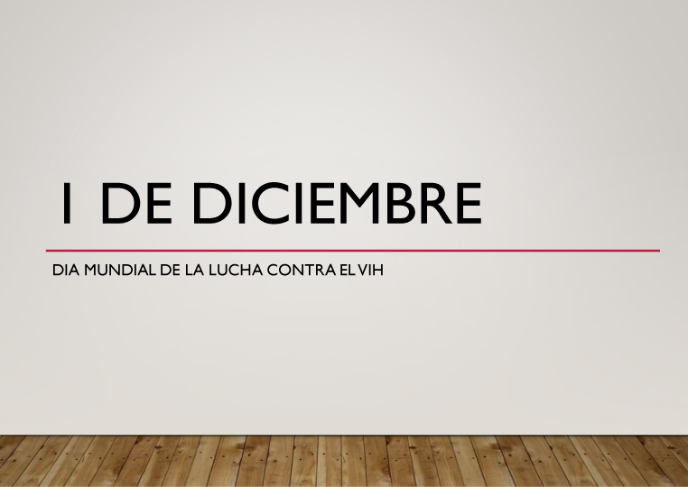
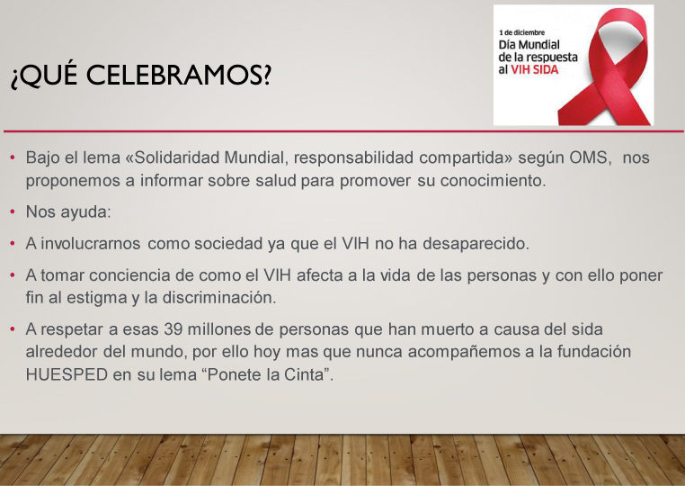
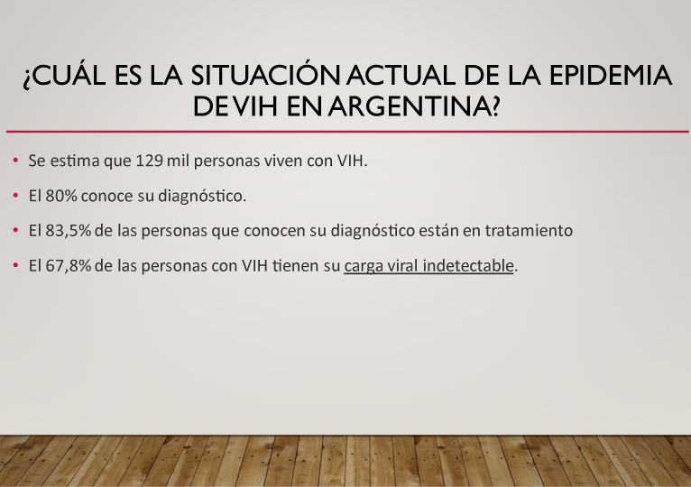
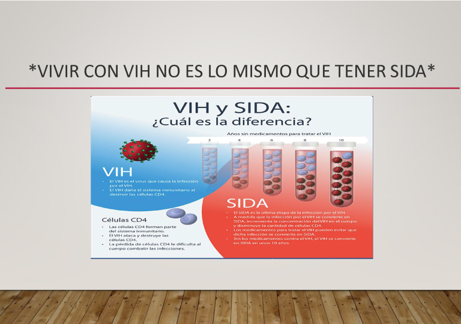
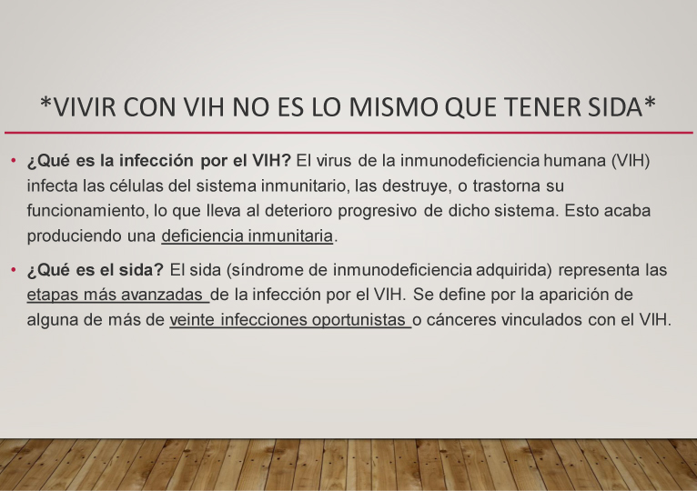
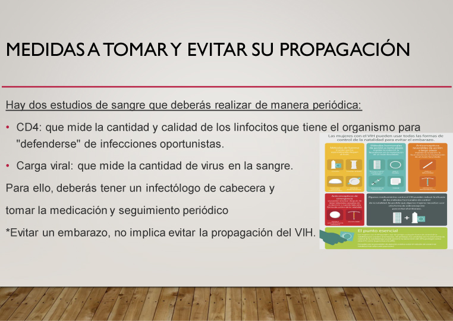
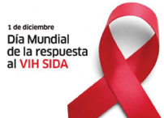

Hoy como todos los años continuamos celebrando el Día Mundial de la Lucha contra el VIH, bajo el lema “Solidaridad Mundial, Responsabilidad Compartida”. En estos tiempos tan difíciles debemos asumir un compromiso tanto social como sanitario, en donde, ayudemos desde nuestro lugar a educar para la salud promoviendo conciencia. Acompáñanos en esta gratificante tarea. Podes completar este cuestionario (ver formulario) sobre: ¿Qué sabemos del VIH/SIDA?
Cuestionario